洗顔後のつっぱり。
洗いすぎていませんか？
熱いお湯や強い洗浄、空気の乾燥などは、肌のうるおいを奪う要因に。乾燥した肌をさらにこすってしまうと、刺激になることもあります。
いつものケアを振り返るなら
洗顔後のつっぱりや、日中のカサつきはありませんか？まずは洗い方と保湿の見直しから。
鏡の前で、
そう思ったことが
あるあなたへ。
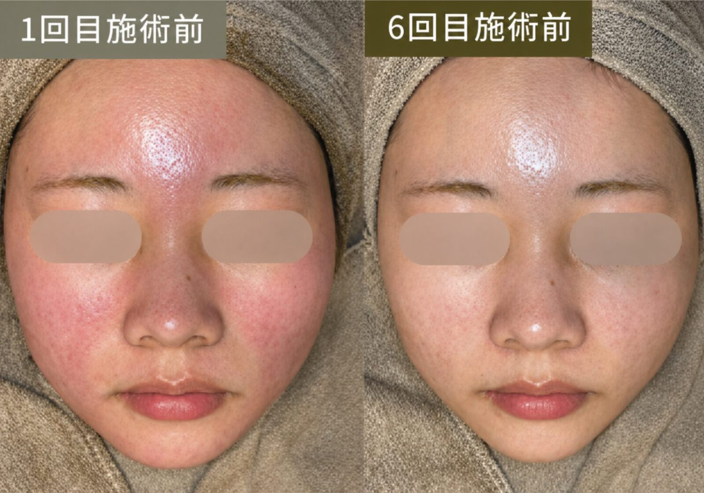
ニキビも、残った跡も。
次に何を試すか、もう迷いたくない。
自分の肌を知ることから始める、
ダイヤモンドハーブピーリング®。
REAL SKIN / 実際の施術例
 施術前施術後
施術前施術後
 施術前施術後
施術前施術後
 施術前施術後
施術前施術後
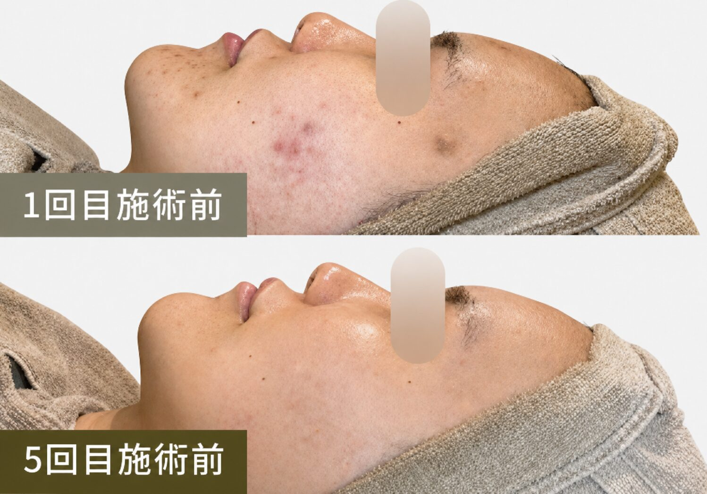
施術前施術後 施術前施術後
施術前施術後
 施術前施術後
施術前施術後
横にスライドして見る
「施術後」は継続施術後の来店時の写真を含み、施術直後とは限りません。施術期間・回数は症例により異なります。一例であり、同様の結果を保証するものではありません。肌の状態・変化には個人差があります。
でも、その前に。
あなたにも、こんな経験はありませんか？
YOUR STORY / こんな気持ち、ありませんか
むしろ、いろいろ試してきた。
次こそは、と期待して選んだもの。
合わなかったからといって、
あなたの頑張りが足りないわけではありません。
「人気のケア」と「今の自分に合うケア」は、
同じとは限らないから。
UNDERSTAND YOUR SKIN / 肌を知る
カサつく日もあれば、ベタつく日も。
「肌荒れ」は、ひとつの状態ではありません。
まずは、肌の「守るはたらき」から。
肌のいちばん外側にある「角層」は、うるおいを保ち、外からの刺激を受けにくくする役割を担います。乾燥などでこのはたらきが乱れると、カサつきや刺激の感じやすさにつながることがあります。
肌の仕組みをわかりやすく表した模式図です。熱いお湯や強い洗浄、空気の乾燥などは、肌のうるおいを奪う要因に。乾燥した肌をさらにこすってしまうと、刺激になることもあります。
洗顔後のつっぱりや、日中のカサつきはありませんか？まずは洗い方と保湿の見直しから。
気になる部分を何度も触る、こすって落とす、新しいアイテムを次々に重ねる。よかれと思った習慣や、肌に合わない成分が、赤み・ヒリつきにつながる場合があります。
使い始めてから違和感のあるものはありませんか？刺激を感じる製品は使用を控え、続く場合は皮膚科に相談しましょう。
ニキビには、皮脂・毛穴の詰まり・炎症などが関わります。ホルモンの影響などもあり、「汚れを落とすこと」だけでは対応しきれない場合があります。
乾燥とベタつき、どちらも気になることは？ひとつの悩みだけで判断せず、今の肌全体を見ていくことが大切です。
MORE IS NOT ALWAYS BETTER
人気だから、高価だから、自分にも合うとは限らない。ホームケアをやめるのではなく、今の肌に必要なことを整理する。
La Vioraでは、肌の様子と普段のケアを伺い、施術が適しているかも含めて一緒に考えます。
強い赤み・かゆみ・痛みや、長引く肌荒れは皮膚科へ。肌荒れには治療が必要な皮膚疾患が含まれる場合があります。La Vioraは医療機関ではなく、エステは治療の代わりではありません。
CARE FOR YOU / 肌に合わせるケア
肌質管理士によるカウンセリングと肌診断システムで、乾燥・皮脂・刺激への感じやすさを確認します。
4つのタイプから内容・強さを検討。肌状態によっては施術を見送り、医療機関への相談をおすすめすることもあります。
保湿や洗顔、施術後の過ごし方まで。肌質管理士への365日相談で、次の来店までの不安にも寄り添います。
WHY LAVIORA / 独自性
WHAT'S DIFFERENT / 他のサロンと、何が違うのか。
あなたの肌に合わせて、施術をカスタマイズ。
肌診断の結果から、4つの施術タイプと刺激の強さを、一人ひとりの肌に合わせて組み立てます。
「今日はやめておきましょう」も、提案のひとつ。
都度払いだから、続けるかどうかを毎回あなたが決められます。
帰ってからも、何でも聞いてください。
施術後の肌の様子、自宅でのケア、ちょっとした不安まで。肌質管理士で構成された相談窓口が、LINEでお答えします。
使う商材は、創薬会社と共同開発した自社処方。
処方の考え方や研究データをご説明します。成分に関する研究と、個々のお客様の施術結果は異なります。
RESEARCH & PERSONAL CARE
創薬会社・大学病院との共同開発から生まれた、ダイヤモンドハーブピーリング®。独自の処方・施術設計を、一人ひとりの肌状態に合わせてご提案します。内容をご説明し、納得いただいてから施術へ進みます。
徹底的に肌を分析し、あなたに合う施術を選ぶところに、たっぷり時間をかけます。

COUNSELING
累計5万件以上の施術実績をもとにした、La Vioraの肌診断システムで、生活習慣・肌状態・肌特性を分析。肌質管理士が普段のケア、刺激への不安、大切な予定まで伺い、施術を選ぶ理由もお伝えします。
肌状態
乾燥・皮脂・刺激の感じやすさ
これまで
普段のケア・施術経験・生活習慣
これから
目指したい状態・大切な予定・通い方
PERSONALIZED CARE
肌に合わせて選ぶ 4 TYPES
商材・刺激の強さ・通い方まで、肌状態に合わせて設計。4つの施術タイプから、肌質管理士がその日の肌に合う内容をご提案します。
来店前に、ご自身でタイプを決める必要はありません。
以前の施術で変化を感じなかった方も、まずは肌診断から。様々な角度から肌を分析し、今の肌に合うかを確かめます。
REAL VOICES / お客様の声
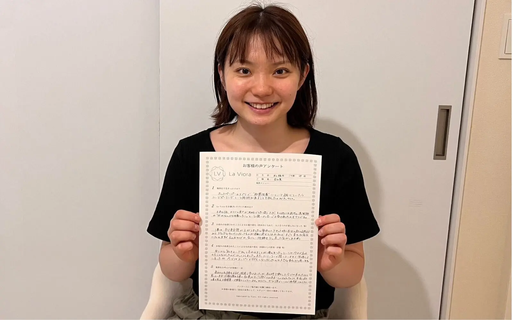
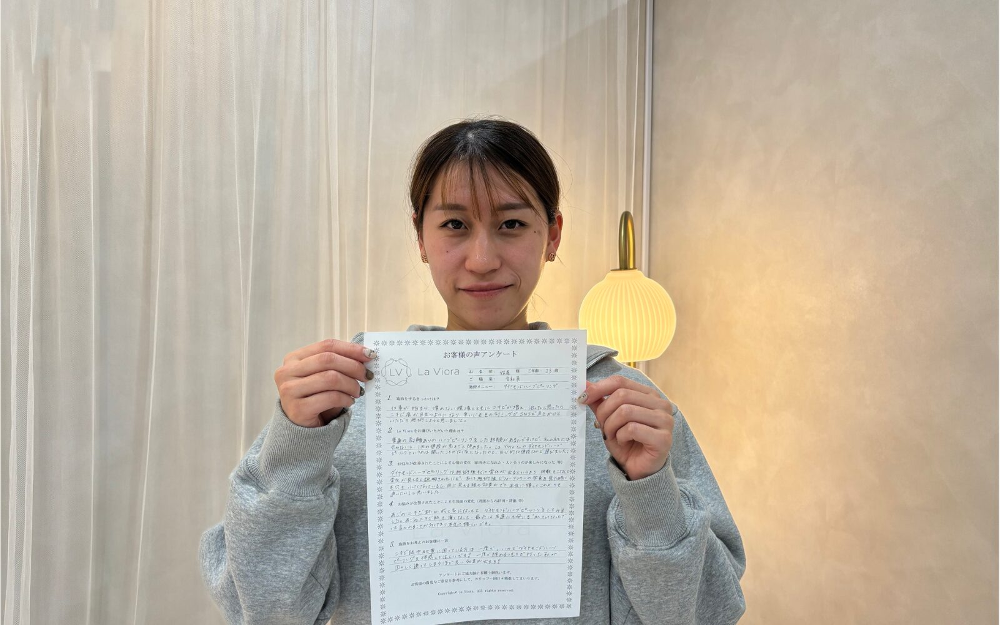
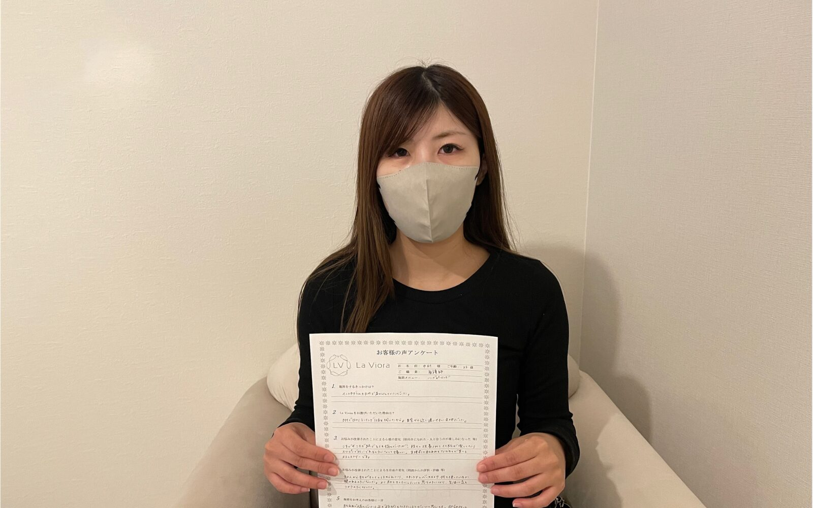
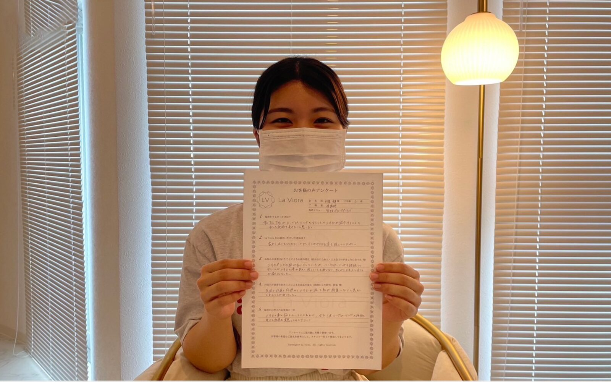
横にスライドして見る
公式サイトの体験談から見出しを抜粋し、内容を要約しています。個人の感想であり、効果を保証するものではありません。施術例写真とは別のお客様です。
RETURN VISITS / 再来店
リピート率88%
全店舗累計施術実績 50,000件以上
施術実績は全店舗の累計施術回数です。リピート率は、2025年〜2026年7月の実績をもとに、再来店された方の割合を自社基準で算出した値です。2026年9月14日時点。
REVIEWS & SALONS / 選ぶための判断材料
口コミ 5,000件以上
口コミ 2,300件
2026年9月現在は28店舗・オープン準備中を含む
HOT PEPPER Beauty AWARD

ハーブピーリング専門店・全国28店舗
※2026年9月現在。オープン準備中の店舗を含みます。
THE EXPERIENCE / 店内・スタッフ
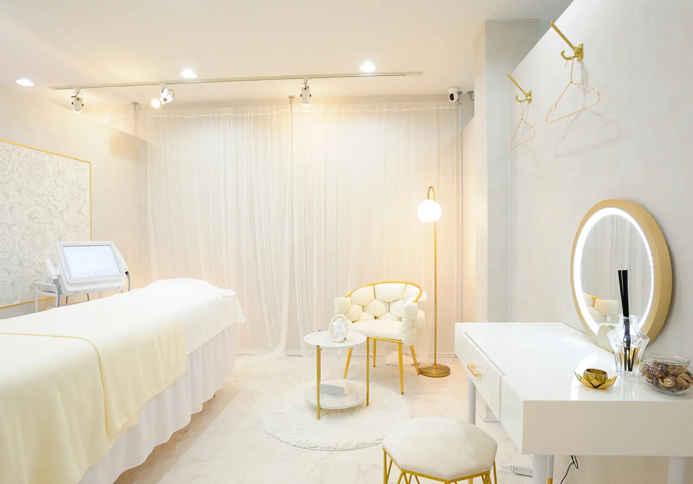
肌の悩みも、すっぴんも。人目を気にせず過ごせるように、来店から退店までを設計しています。
他のお客様と一緒に待つ時間はありません。
周囲を気にせず、肌のことを話せます。
最後まで、他のお客様と顔を合わせずに。
SALON STAFF / スタッフ
ビューティーエリート
アカデミーBeautyElite Academy Japan
肌質管理士コース
通過率3％
厳しい基準の肌質管理士コースを卒業した肌質管理士が、あなたの肌に向き合います。
施術前だけでなく、施術中に感じた刺激や不安もお伝えください。担当スタッフは店舗により異なります。
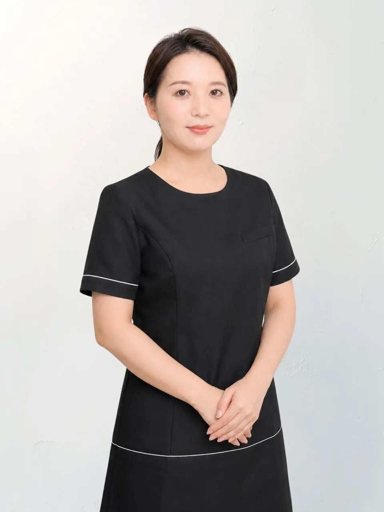
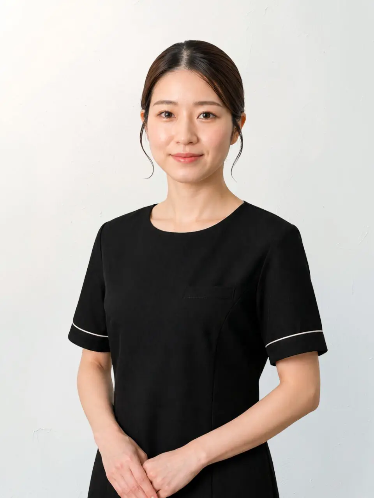

QUALITY / 品質への取り組み
国際特許取得成分「不死化ヒト歯髄幹細胞培養上清（ImS）」を使用。
使用する製品は国内で製造。
界面活性剤・パラベン・アルコール等を使用しない設計。
重金属・ヒ素・無菌試験等の結果を、ご希望の方に開示。
THE TREATMENT JOURNEY / 施術の流れ
STEP 1
悩みだけでなく、これまでのケア、刺激への不安、大切な予定まで。今の肌に合う進め方を一緒に整理します。
EXPERIENCE VALUE不安や予定を、施術前に共有できる
STEP 2
肌診断システムで生活習慣・肌状態・肌特性を様々な角度から分析し、一人ひとりにおすすめのピーリングをご提案します。
EXPERIENCE VALUE自分に合うピーリングを、理由と一緒に知る

STEP 3
余分な皮脂や汚れを丁寧に落とし、肌の状態を見やすくしながら施術の準備を整えます。
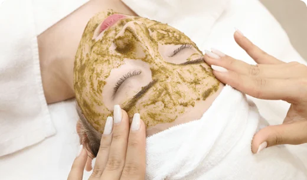
STEP 4
決められた一つの強さではなく、その日の肌状態と目的に合わせ、刺激の感じ方にも配慮して進めます。
EXPERIENCE VALUE「強い」より、「合う」を選べる

STEP 5
ダイヤモンドジェルパックで、施術後の肌を整えます。
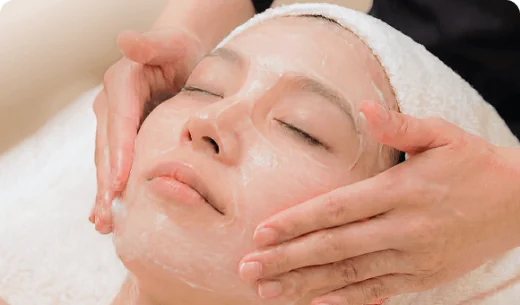
STEP 6
ダイヤモンドリペアクリームによる保湿・ツヤ。
STEP 7
施術前後の肌状態を写真で一緒に確認し、当日の過ごし方や避けたいこと、自宅でのケアを分かりやすくお伝えします。
EXPERIENCE VALUE帰ってからも、迷わず過ごせる
各工程・所要時間は目安です。肌状態や施術内容により変わる場合があります。
初回体験のご案内
完全都度払い・コース契約・回数券なし

※赤み・違和感・角片等が生じる場合があります。感じ方や変化には個人差があります。
PRICE & PARTS / 施術箇所
初回 5,800円（税込） LINE友だち追加限定（通常7,800円）
2回目以降は、1回ごとに11,800円（税込）。コース契約・回数券はありません。
所要時間 約120分（カウンセリング含む）
気になる部位は、1箇所につき＋5,000円（税込）で追加できます。フェイス、首・デコルテ、二の腕、背中上部、背中下部からお選びいただけます。
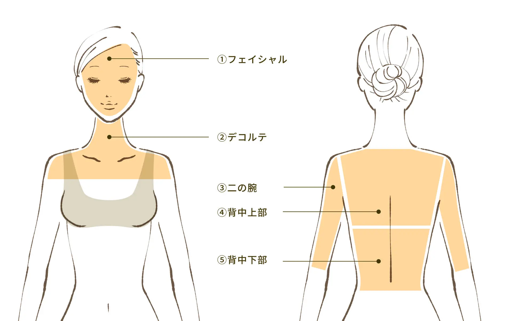
FIRST VISIT GUIDE / 初めての方へ
まずは自分の肌に合うか、確かめたい。その気持ちを大切に、契約への不安も、帰宅後の迷いも相談できる仕組みを整えています。
何回も通う契約が必要ですか？
1回ごとに内容と料金を確認し、次も受けるかをご自身で決められます。
勧誘や営業をされませんか？
必要な施術をご案内しますが、その場で次回予約や契約を決める必要はありません。
帰宅後も相談できますか？
施術後の肌の状態や、自宅でのケア、次回来店までの過ごし方を相談できます。
赤みや違和感など気になることがあれば、丁寧に対応します。
友だち追加後すぐ確認。相談・予約は、納得してからで大丈夫です。
HOW TO START / LINEでの確認方法
初回（1箇所）を5,800円で受けられるクーポンです（通常7,800円）。
見るだけでも大丈夫です。気になることは肌質管理士に聞けます。
予約するかどうかは、そのときのあなたが決められます。
QUESTIONS / よくある質問
はい、ご安心ください。 La Viora Clinicalでは、初めての方にも安心してお過ごしいただけるよう、施術前に丁寧なカウンセリングを行い、お肌の状態やお悩みに合わせてご提案いたします。内容をご説明し、ご納得いただいたうえで施術を行いますので、不安な点はその場で何でもご相談ください。
また、お持ち物は特に必要なく、メイクをしたままご来店いただけます。 施術前に当店で専用のクレンジング・洗顔を行い、お肌を最適な状態へ整えてから施術に入りますので、初めての方でも安心してお越しいただけます。
ほとんどありません。 施術中に軽いピリつきを感じる方もいらっしゃいますが、一時的な反応であり、通常はすぐにおさまります。剥離しない処方のため、大切な予定の前日でも安心して受けていただけます。
肌のターンオーバー周期に合わせ、改善期は2〜4週間に1回のペースでの施術がおすすめです。 数回施術を受けていただいた後は、2〜4ヶ月に1度のメンテナンスで状態を定着させることが可能です。
完全都度払い制のサロンです。 無理な勧誘やコース契約は行っておらず、都度、ご自身のタイミングでご利用いただけます。施術料金以外の追加費用はかからず、施術に付随する商品の販売も行っていません。La Viora Clinicalでは、無理な販売ではなく、施術そのものにご納得いただくことを大切にしています。
お支払いは、現金・クレジットカード・交通系IC・iD・QUICPayに対応しています（※PayPayはご利用いただけません）。また、転勤やお引越しの際には、全国の店舗へ移動して通っていただくことが可能で、手数料などは発生しません。
ダイヤモンドハーブピーリング®は、剥離や強いダウンタイムを前提とした施術ではございません。 そのため、施術前後に日常生活を大きく制限していただく必要はなく、特別なご準備も不要です。 また、施術直後からメイク・スキンケアともに可能でございます。 サロンにはドレッサー・ドライヤー・ヘアアイロンをご用意しておりますので、ゆっくりとお支度いただけます。 なお、施術当日はサウナや長時間の入浴など、体を過度に温める行為はお控えください。また、同日の脱毛施術もお控えいただいております。
OUR THOUGHT / 私たちの想い
流行っているから、誰かがすすめていたから。
そんな理由で選んで、また迷ってしまう前に。
今まで試してきたことも、うまく言葉にできない不安も、そのまま聞かせてください。
あなたが納得して、自分の肌に合うケアを選べること。
私たちは、そこから一緒に始めたいと思っています。
La Viora Clinical